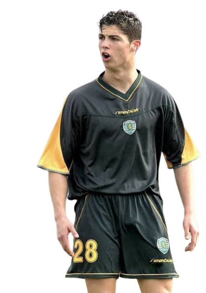

Crisitiano ronaldo dos santos aveiro was Born in the poverty-stricken neighborhood of Santo António in Funchal, Madeira, Cristiano's playground was the concrete patches and steep hills of a tiny island. Early Beginnings in Madeira (1992–1997) Ronaldo was born in Funchal, Madeira, in 1985. His path in organized football began in his local environment: Andorinha (1992–1995): At age seven, he joined this local amateur club where his father, José Dinis Aveiro, worked as a kit man. Nacional (1995–1997): After three years at Andorinha, he moved to Nacional, one of Madeira's major clubs.